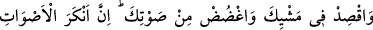
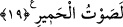

Çocuklar gibi oyun oynama, kadın gibi cilve yapma
Niyaz ve tazarru ederek git Hak eri ol!
Hikmet sâhibi biri şöyle demiştir: “Eğer atınla böbürlendinse, güzellik ve mahâret
senin değil onundur. Elbise ve âletlerinle büyüklük tasladınsa, güzellik senin değil o
elbise ve âletlerindir. Ecdâdınla böbürlendinse, bil ki fazîlet sende değil onlardadır.
Bütün bunlar dile gelseydi şöyle derlerdi: “Bunlar bizim güzelliğimiz ve
meziyetlerimizdir. Oysa sende bir güzellik yoktur. Öyleyse övündüğün zaman sende
bulunan bir güzellik ile övün; sende olmayanla değil.
Hâfız der ki:
Hakîkat yolunun kalenderleri, yarım arpaya bile almazlar,
Hünersiz kişinin giydiği atlas kaftanı.
Dünyâdan bir şey hoşuna giderse senin ölüp onun kalacağını, yahut onun yok olup
senin kalacağını veya her ikinizin de yok olacağını düşün. Sana âid bir şey hoşuna
giderse, eline geçtikten sonra kısa bir süre içinde elinden çıkacağını, sana tekrar
dönüşünün uzun süreceğini; eğer Allah ve âhirete inanıyorsan onun için vereceğin
hesabın uzun süreceğini düşün.”
Şöyle bir hikâye anlatılır: Krallardan birine, kıymetli taştan yapılmış, mücevherlerle
süslenmiş, eşi benzeri olmayan bir bardak getirildi. Kral buna son derece sevindi ve
yanında bulunan hikmet ehli bir zata: “Bunun hakkındaki düşüncen nedir?” diye sordu.
Adam: “Senin için bunu hemen gelecek bir fakirlik ve acil bir musîbet olarak
görüyorum” dedi. Kralın: “Bu nasıl olur?” sorusuna ise şöyle cevap verdi: “Eğer
kırılırsa tamiri mümkün olmadığından senin için bir musîbet olur. Çalınırsa ona ihtiyaç
duyarsın. Oysa sen, o sana getirilmeden önce hem musîbetten hem de ona muhtaçlıktan
uzaktın.” Gerçekten de o hikmet ehli zâtın dediği gibi bardak bir gün kırıldı ve bu krala
pek büyük bir musîbet oldu. Bunun üzerine: “O hikmet sâhibi zât doğru söylemiş. Keşke
bu bardak bana hiç getirilmeseydi” diye ah çekip inledi.
Dünyâ mutluluk veren bir rüyâ gibidir,
Göreni kısa bir müddet sevindirir, sonra yok olur gider.
19. Yürüyüşünde tabiî ol, sesini alçalt. Unutma ki, seslerin en çirkini merkeplerin
sesidir.